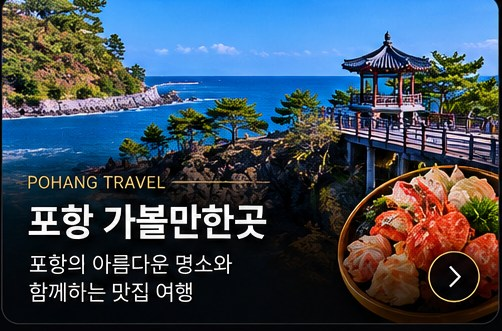

POHANG TRAVEL GUIDE
포항 가볼만한곳과 영일대 주변 맛집 여행

포항 가볼만한곳
포항 여행에서는 영일대해수욕장, 환호공원, 스페이스워크, 죽도시장 등 여러 장소를 일정에 맞춰 둘러볼 수 있습니다.
영일대횟집과 함께 계획하기
관광지 방문 전후 포항 영일대 인근에서 자연산회와 물회, 대게 등 메뉴를 살펴보며 식사 동선을 계획해 보세요.
영일대횟집 방문 정보
포항 영일대해수욕장 인근에서 자연산회, 대게, 물회와 해산물 메뉴를 안내합니다. 가게 앞 주차 및 맞은편 두무치 공영주차장을 참고해 주세요. 단체모임은 인원과 메뉴를 미리 문의해 주세요.
네이버 플레이스전화 문의